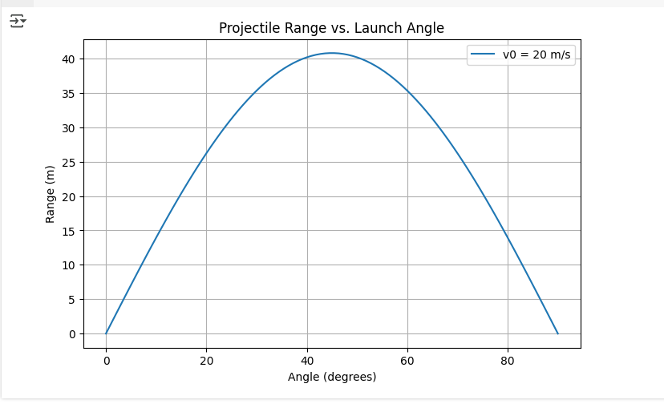
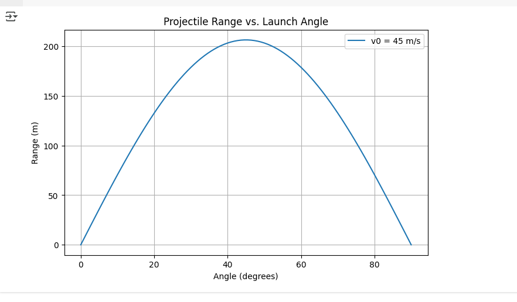
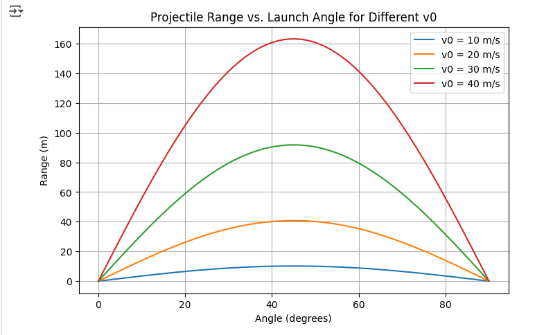
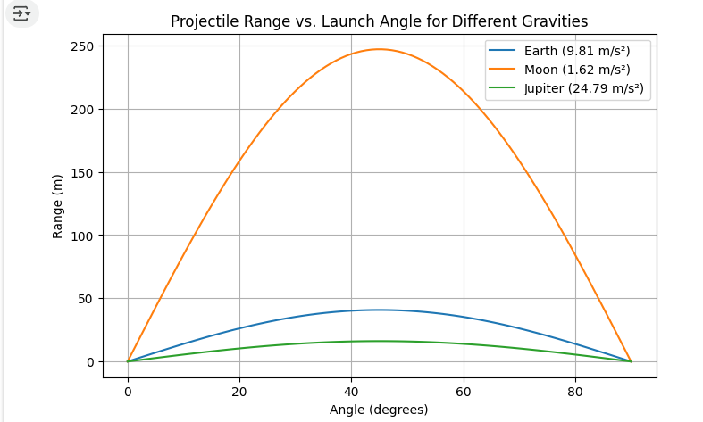

Problem 1: Investigating the Range as a Function of the Angle of Projection
1. Theoretical Foundation
Projectile motion is a type of two-dimensional motion where an object is launched into the air with an initial velocity \(v_0\) at an angle \(\theta\) relative to the horizontal. The motion can be analyzed by breaking it into horizontal (x) and vertical (y) components.
1.1 Equations of Motion
The horizontal and vertical components of the initial velocity are:
\(v_{0x} = v_0 \cos(\theta)\)
\(v_{0y} = v_0 \sin(\theta)\)
Using the kinematic equations, the motion in each direction is governed by: - Horizontal motion (constant velocity, no acceleration in the ideal case): \(x = v_{0x} t = v_0 \cos(\theta) t\) - Vertical motion (accelerated due to gravity): \(y = v_{0y} t - \frac{1}{2} g t^2\)
where:
- \(g\) is the acceleration due to gravity \((9.81 \text{ m/s}^2)\)
- \(t\) is the time of flight.
1.2 Time of Flight
The time of flight is determined by solving for when the projectile returns to the ground \((y = 0)\): \(t = \frac{2 v_0 \sin(\theta)}{g}\)
1.3 Range Equation
The range \(R\) is the horizontal distance traveled when the projectile lands: \(R = v_{0x} \cdot t = v_0 \cos(\theta) \cdot \frac{2 v_0 \sin(\theta)}{g}\)
Using the identity \(2 \sin(\theta) \cos(\theta) = \sin(2\theta)\), we get: \(R = \frac{v_0^2 \sin(2\theta)}{g}\)
2. Analysis of the Range
- The range is maximized when \(\sin(2\theta) = 1\), which occurs at \(2\theta = 90^\circ\), or \(\theta = 45^\circ\).
- If the initial velocity \(v_0\) increases, the range increases quadratically.
- If gravity \(g\) increases (e.g., on another planet), the range decreases.
3. Practical Applications
- Sports: Understanding projectile motion is crucial in games like soccer, basketball, and golf.
- Engineering: Used in ballistics, rocketry, and artillery targeting systems.
- Real-World Effects: Air resistance, wind, and uneven terrain can significantly alter the theoretical range.
4. Implementation: Python Simulation
The following Python script simulates projectile motion and plots the range as a function of the angle of projection.
import numpy as np
import matplotlib.pyplot as plt
def projectile_range(v0_lıst, g=9.81):
angles = np.linspace(0, 90, 100) # Angle range from 0 to 90 degrees
angles_rad = np.radians(angles) # Convert degrees to radians
ranges = (v0**2 * np.sin(2 * angles_rad)) / g # Compute range
plt.figure(figsize=(8, 5))
plt.plot(angles, ranges, label=f'v0 = {v0} m/s')
plt.xlabel("Angle (degrees)")
plt.ylabel("Range (m)")
plt.title("Projectile Range vs. Launch Angle")
plt.legend()
plt.grid()
plt.show()
projectile_range(v0=20)
V0=20

V0=45(TOP ONE)

Explanation of the Graph
This graph illustrates how the horizontal range of a projectile depends on the launch angle for different initial velocities (\( v_0 \)).
- Each curve represents a different initial velocity.
- The maximum range occurs at 45°.
- As the initial velocity increases, the range increases quadratically (\( v_0^2 \)).
- Lower initial velocities result in shorter ranges, while higher velocities allow the projectile to travel further.
This helps in understanding how objects like balls, bullets, or rockets behave when launched at different speeds and angles.
import numpy as np
import matplotlib.pyplot as plt
def projectile_range_multi_v0(v0_list, g=9.81):
angles = np.linspace(0, 90, 100)
angles_rad = np.radians(angles)
plt.figure(figsize=(8, 5))
for v0 in v0_list:
ranges = (v0**2 * np.sin(2 * angles_rad)) / g
plt.plot(angles, ranges, label=f'v0 = {v0} m/s')
plt.xlabel("Angle (degrees)")
plt.ylabel("Range (m)")
plt.title("Projectile Range vs. Launch Angle for Different v0")
plt.legend()
plt.grid()
plt.show()
projectile_range_multi_v0([10, 20, 30, 40])

Explanation of the Graph
This graph shows how the horizontal range of a projectile changes with the launch angle for different gravitational accelerations (\(g\)).
- Each curve represents a different gravitational environment: Earth (\(g = 9.81 \, \text{m/s}^2\)), Moon (\(g = 1.62 \, \text{m/s}^2\)), and Jupiter (\(g = 24.79 \, \text{m/s}^2\)).
- As gravity decreases (like on the Moon), the range increases for the same initial velocity.
- On higher gravity bodies (like Jupiter), the range decreases.
This graph helps understand how the same projectile behaves differently in various planetary environments.
import numpy as np
import matplotlib.pyplot as plt
def projectile_range_multi_g(v0=20, g_values=[9.81, 1.62, 24.79]):
angles = np.linspace(0, 90, 100)
angles_rad = np.radians(angles)
g_labels = ["Earth (9.81 m/s²)", "Moon (1.62 m/s²)", "Jupiter (24.79 m/s²)"]
plt.figure(figsize=(8, 5))
for g, label in zip(g_values, g_labels):
ranges = (v0**2 * np.sin(2 * angles_rad)) / g
plt.plot(angles, ranges, label=label)
plt.xlabel("Angle (degrees)")
plt.ylabel("Range (m)")
plt.title("Projectile Range vs. Launch Angle for Different Gravities")
plt.legend()
plt.grid()
plt.show()
# Example usage
projectile_range_multi_g()

5. Frequently Asked Questions (FAQ)
1. At what angle is the maximum range achieved in projectile motion?
- The maximum range is achieved at 45° because, at this angle, the horizontal and vertical components of the velocity are balanced, maximizing distance.
2. How does the initial velocity affect the range?
- The range increases quadratically (v₀²) as the initial velocity increases, meaning a faster launch gives the projectile more distance to travel.
3. What happens if gravity changes?
- A higher gravitational acceleration reduces the range because the projectile falls back to the ground more quickly, while a lower gravity increases the range by allowing the projectile to stay in the air longer.
4. Does mass affect the projectile's range?
- No, in ideal conditions without air resistance, mass does not affect the range because both heavy and light projectiles fall at the same rate under the same conditions.
5. How does air resistance impact projectile motion?
- Air resistance reduces the range by slowing down the projectile and changing its trajectory, making the optimal launch angle lower than 45°.